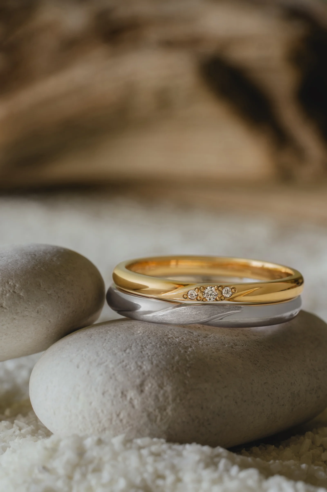
結婚指輪を、手作りする。
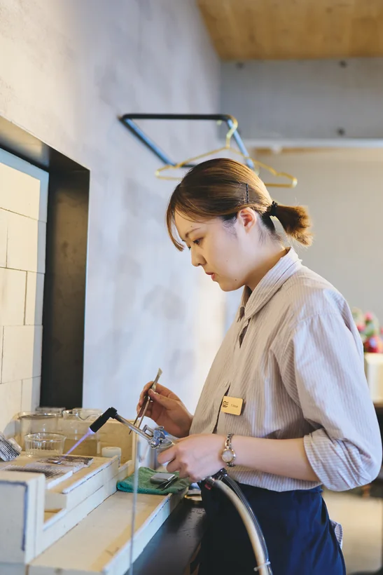
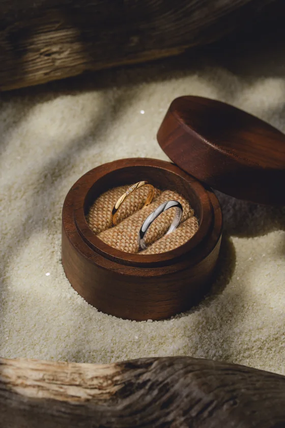
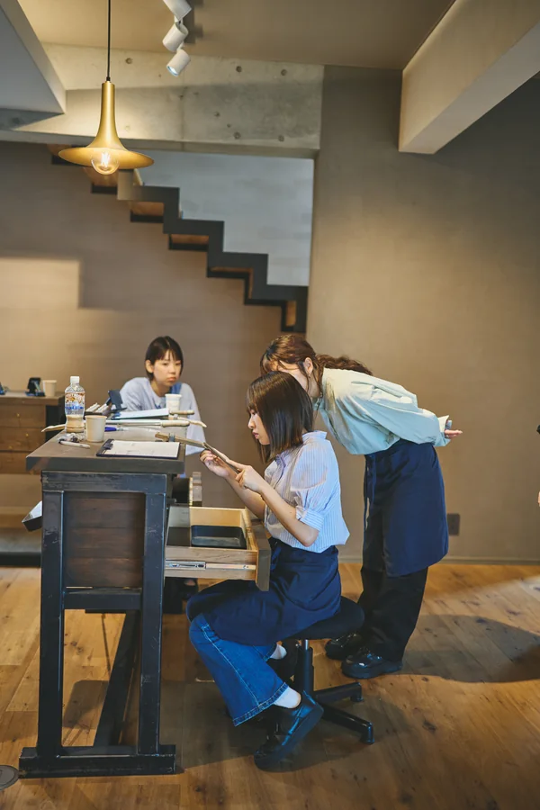
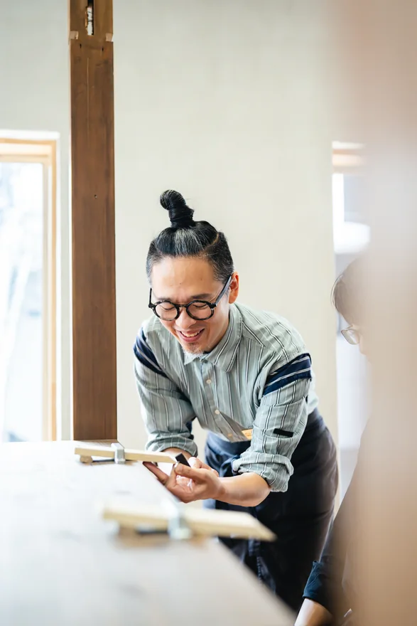

私たちの歩み / Our History
お客さまと重ねた日々。
使い込まれた道具には、手仕事の記憶が静かに息づいています。
この工房から生まれた指輪
- 結婚指輪
- 32,705本
- 婚約指輪
- 3,476本
※当工房ギャラリーの掲載件数に基づく（結婚指輪＝2本 / 婚約指輪＝1本）
工房での指輪づくり


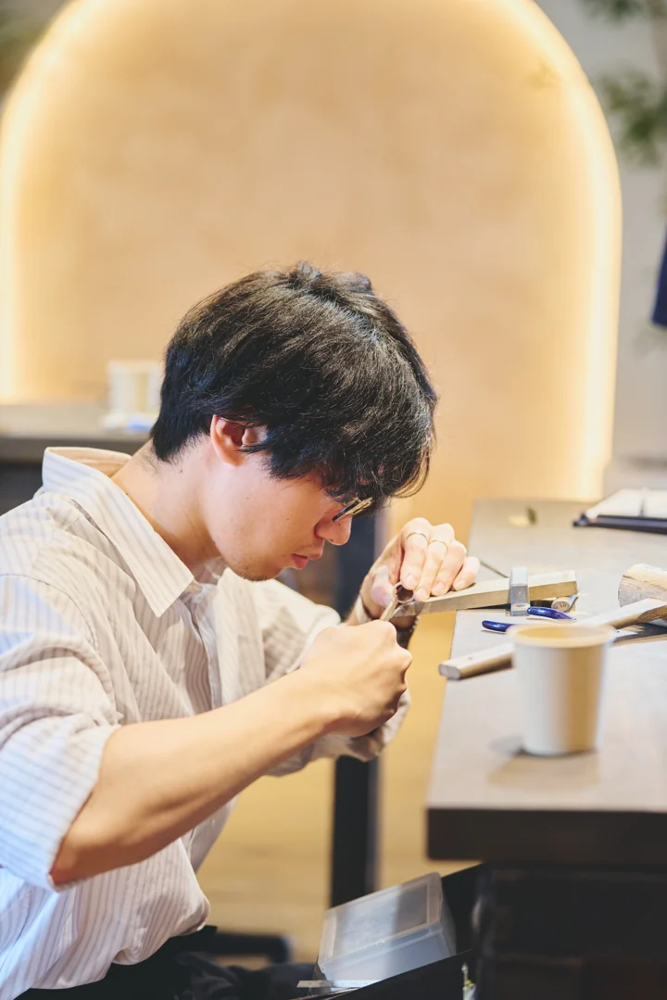
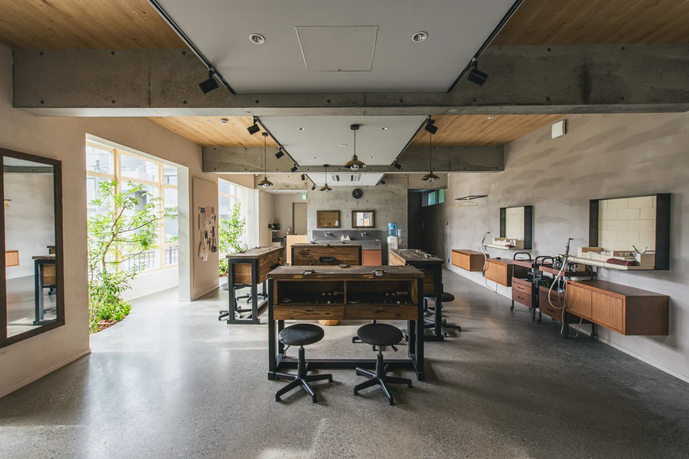


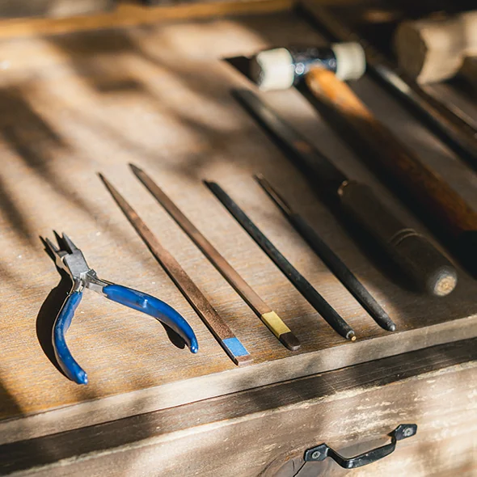

コースのご案内 / Course
これからを、ともにする指輪。
お二人の毎日にも。想いを伝える日にも。
大切にしたいかたちを、お選びください。
そのほかのコース
まだ、かたちが決まっていなくても。
まずは工房見学・ご相談へ


店舗のご案内 / Our Locations
工房を訪ねる。
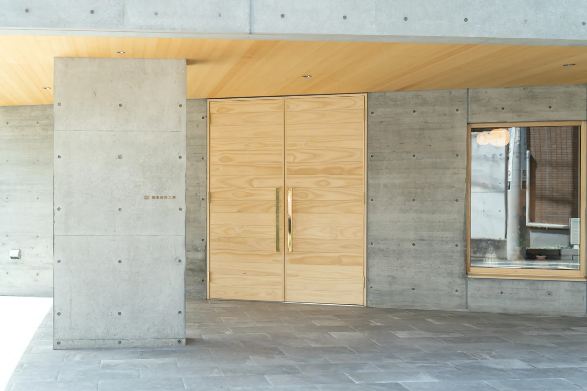
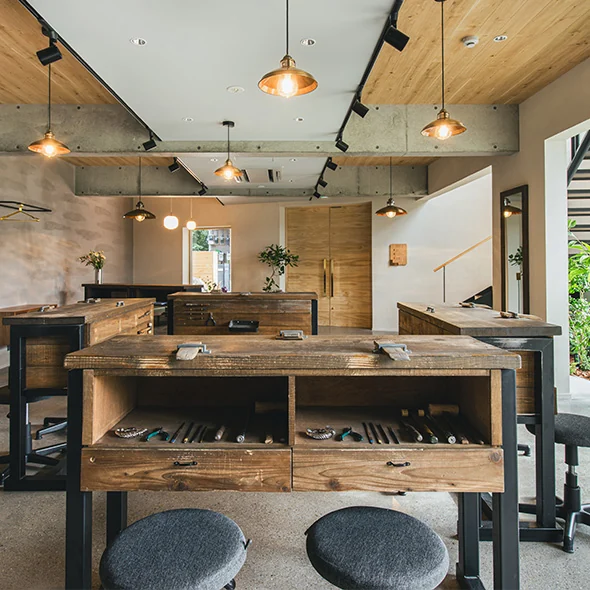
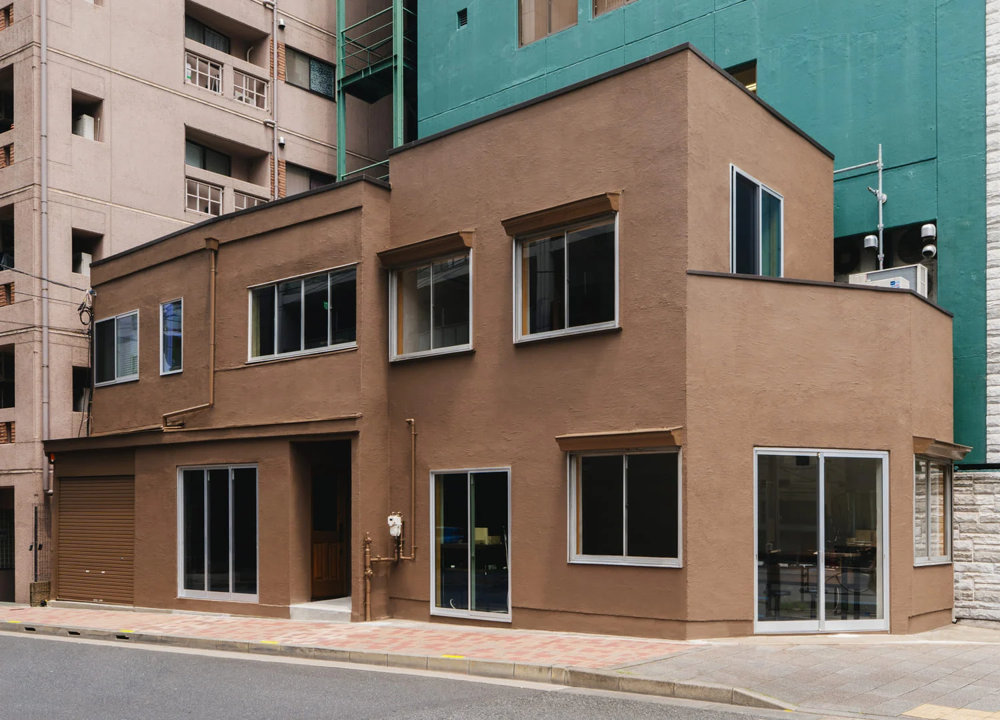
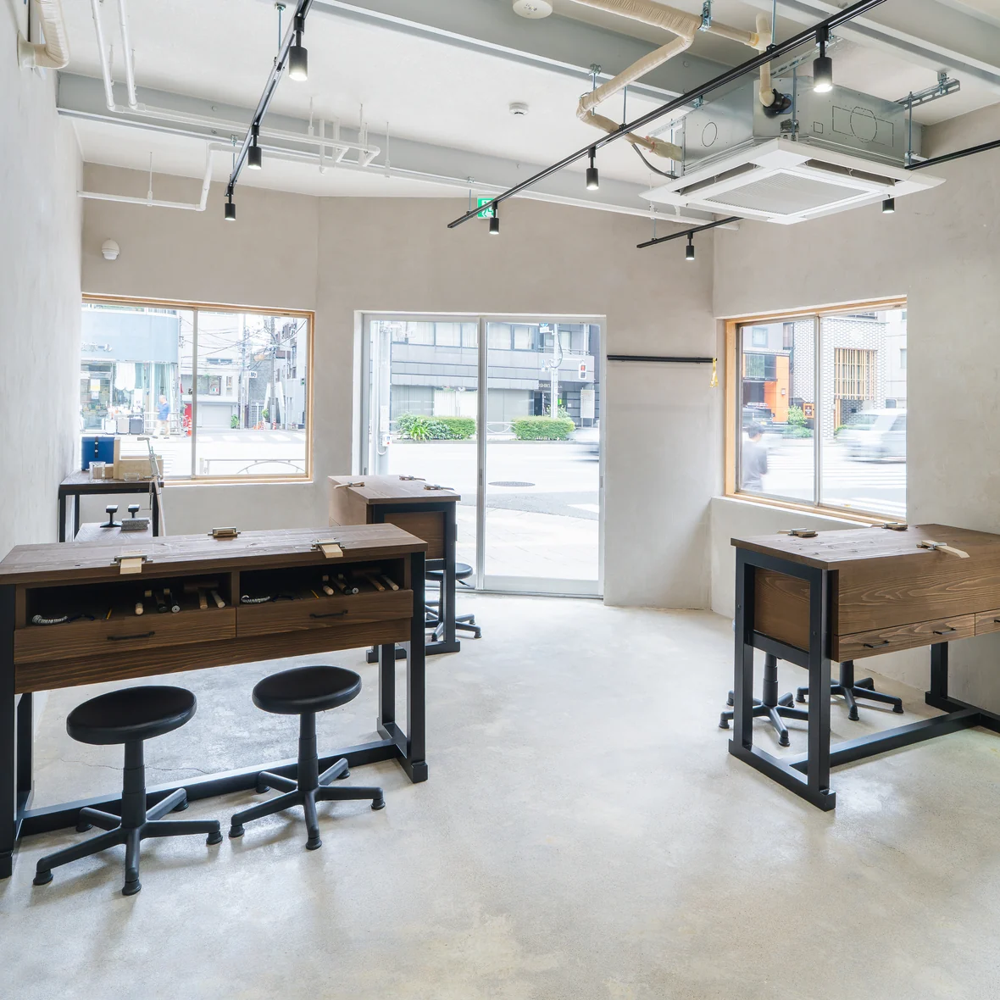
東京・蔵前
鎌倉彫金工房 東京蔵前
- 住所
- 東京都台東区駒形1丁目4-19
- アクセス
- 都営浅草線 浅草駅A1出口より徒歩4分
都営大江戸線 蔵前駅A6出口より徒歩4分 - 定休日
- 定休日 火曜日・木曜日
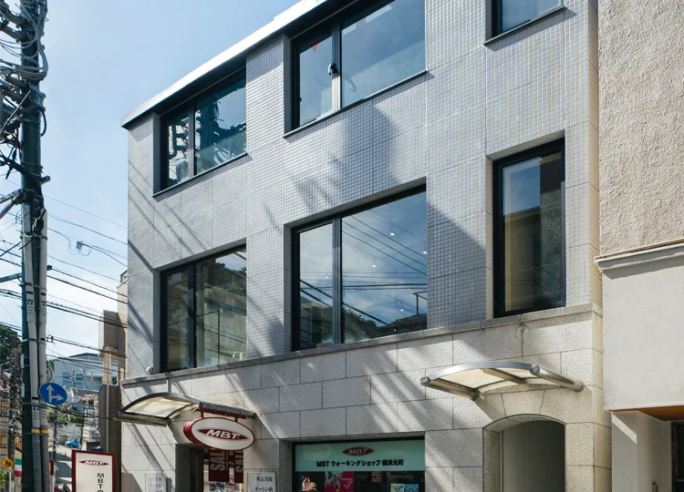
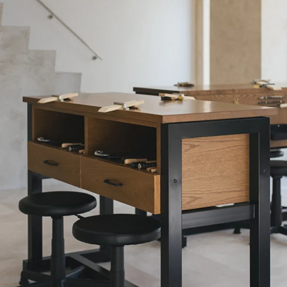
神奈川・横浜
鎌倉彫金工房 横浜元町
- 住所
- 神奈川県横浜市中区元町4丁目163-3 2F階段利用のみ（エレベーターなし）
- アクセス
- 元町・中華街駅5番出口（元町口）より徒歩5分
- 定休日
- 定休日 火曜日・木曜日
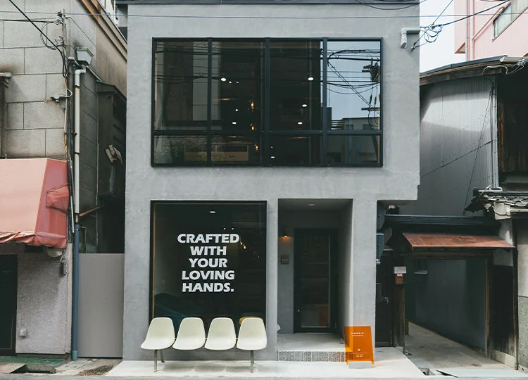
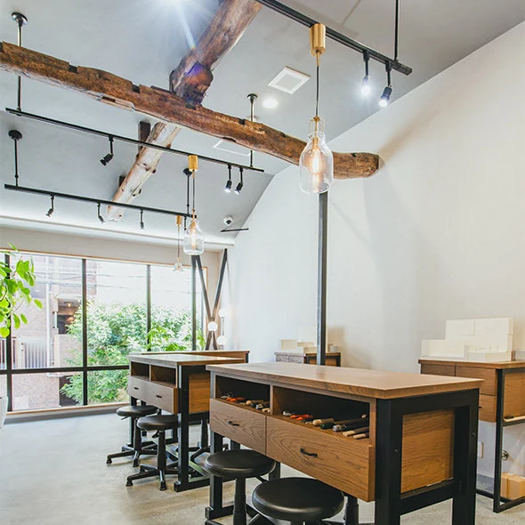
初めての指輪作りでも大丈夫ですか？
ご来店されるお客さまのほとんどが、初めての指輪作りです。制作当日は職人が完成までサポートしますので、ご安心ください。
事前に見学・相談はできますか？
見学・相談も承っています。事前予約が必要ですので、ご予約フォームでご希望の店舗と「結婚指輪・婚約指輪 ご見学＆デザイン相談」をお選びください。
見学・相談の予約へ作った指輪は、当日持ち帰れますか？
通常は制作当日にお持ち帰りいただけます。石留めなどの特殊な加工がある場合は、4〜5週間程度お預かりします。長期連休や年末年始休業を含む場合は、通常よりお時間をいただくことがあります。
完成後のアフターケアはありますか？
当工房でお作りいただいた指輪は、期限を設けずクリーニング・磨き直しを基本無料で承っています。指輪の状態によっては有料になる場合があります。店頭へのお持ち込み、または配送でご相談いただけます。
アフターケアを詳しく見る